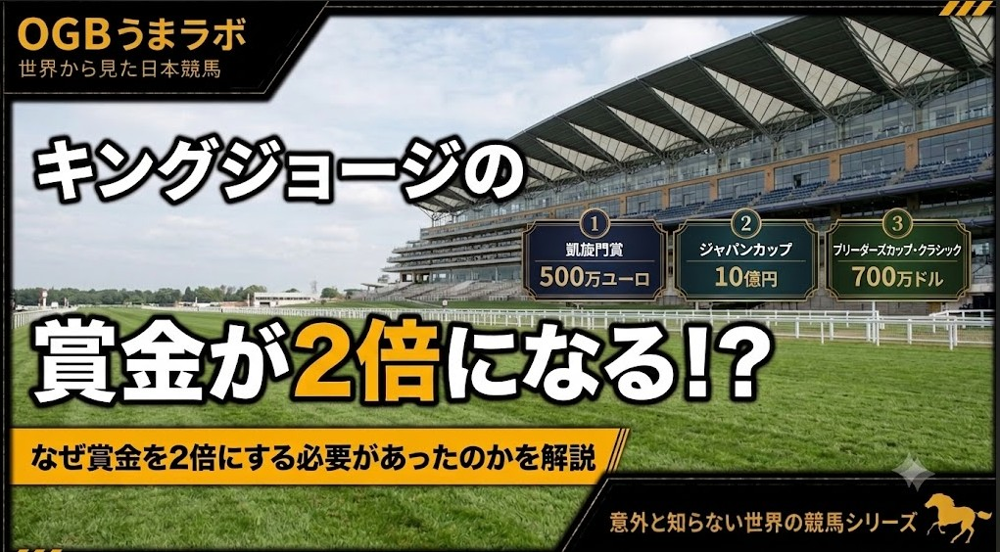

この記事はXに掲載された当時の原文です。情報は掲載時点の内容です。
マスカレードボール参戦直前に発表
キングジョージの賞金が3年で2倍になる理由
日本馬の挑戦を目前に控えた英国のキングジョージ6世＆クイーンエリザベスステークスに、大きなニュースが飛び込んできました。
アスコット競馬場は、2027年のキングジョージの総賞金を250万ポンド（約5億5000万円）へ引き上げると発表しました。
2024年は125万ポンド（約2億7500万円）だったため、わずか3年で賞金は2倍になります。
2025年 150万ポンド（約3億3000万円）
2026年 200万ポンド（約4億4000万円）
2027年 250万ポンド（約5億5000万円）
英国競馬を代表する伝統の一戦で、なぜこれほど急激な賞金増額が続いているのでしょうか。
その背景を調べてみると、世界の一流馬を巡る競馬界の「国際競争」が見えてきました。
## 伝統と格式だけでは一流馬を呼べない時代へ
キングジョージは1951年に創設され、3歳馬と古馬が真夏のアスコットで激突する英国最高峰の一戦として長い歴史を築いてきました。
しかし現在、世界のトップホースには数多くの選択肢があります。
欧州には秋の凱旋門賞があり、その先には米国のブリーダーズカップ、日本のジャパンカップ、香港国際競走などが待っています。
世界各地で高額賞金競走が増えるなか、馬主や調教師にとって「歴史と格式があるから出走する」という時代ではなくなりつつあります。
賞金、競走間隔、輸送、馬場適性、その後のローテーション。
さまざまな条件を比較しながら、どのレースを目指すのかが選択されます。
今回のキングジョージの賞金増額も、こうした世界的な競争と無関係ではありません。
アスコット競馬場のレーシング＆パブリックアフェアーズ担当ディレクター、ニック・スミス氏は、キングジョージについて、欧州を代表する凱旋門賞との賞金差を段階的に縮めていく考えを示しています。
それでも2027年に250万ポンド（約5億5000万円）まで増額されたキングジョージに対し、凱旋門賞の賞金総額は500万ユーロ。
依然として大きな差があります。
だからこそアスコットは、英国最高峰の競走としての地位を守るため、賞金面でも競争力を高めようとしているのです。
アスコットが危機感を持っている「真夏の競馬」
今回の発表で特に興味深いのは、アスコットがキングジョージだけを見ているわけではないことです。
英国には春のクラシックがあり、6月には世界的に有名なロイヤルアスコットがあります。
一方、その後の7月から8月になると、世界のトップホースを巡る競争はさらに激しくなります。
馬主や調教師の視線が、秋以降に行われる世界各地の高額賞金競走へ向き始めるからです。
スミス氏は、英国競馬について、クラシックやロイヤルアスコットが長年強い存在だからといって、それだけに頼ることはできないという趣旨の考えを示しています。
そして、国内の馬主や調教師が秋の海外高額賞金競走へ目を向け始める時期だからこそ、英国の真夏の競馬をさらに強化し、その価値を守っていく必要があると説明しています。
その対象はキングジョージだけではありません。
ジュライカップ、サセックスステークス、キングジョージ、インターナショナルステークスなど、英国各地で行われる夏の主要競走を一つの魅力的な期間として世界へ発信しようとしています。
キングジョージの急激な賞金増額は、英国競馬が「真夏の主役」を世界の高額賞金競走に奪われないための取り組みの一つなのです。
では、なぜこれほど賞金を増やせるのか？
もちろん、賞金を増やしたくても資金がなければできません。
現在のアスコットには、それを可能にする経営面での裏付けがあります。
2025年のアスコット競馬場の売上高は前年比4.8％増となる過去最高の1億1860万ポンド（約261億円）。
税引前利益も前年の842万ポンド（約18億5000万円）から1055万ポンド（約23億2000万円）へ増加しました。
さらに2024年末には460万ポンド（約10億1000万円）の純負債を抱えていましたが、2025年末には1040万ポンド（約22億9000万円）の純現金を保有する状態まで財務内容が改善しています。
約20年前に行われた競馬場再開発に関連する負債も解消されました。
スミス氏は、この財務改善によってアスコットが将来を見据えた投資を行える状態になり、キングジョージの賞金を予定より早い段階で大幅に引き上げることが可能になったと説明しています。
つまり今回の賞金増額は、無理をして捻出したものではありません。
競馬場の収益を改善する。
負債を減らす。
そこで生まれた余力を賞金へ還元する。
賞金を増やして、さらに世界の一流馬を呼ぶ。
そして競走そのものの商品価値を高める。
アスコットは、こうした好循環を作ろうとしていると考えられます。
実際、2026年のアスコット全体の賞金総額は過去最高の1940万ポンド（約42億7000万円）となり、全競走の半数以上で賞金が増額されています。
キングジョージだけに巨額の資金を投入しているわけではないのです。
その舞台へ挑む日本馬
そして2026年のキングジョージには、日本からマスカレードボールとヴュルテンベルクが参戦を予定しています。
日本馬にとって海外遠征の選択肢が増えた一方、海外の競馬場にとっても、日本馬を含む世界の一流馬に「自分たちのレースを選んでもらう」競争が始まっています。
2024年には125万ポンド（約2億7500万円）だったキングジョージの賞金は、2027年には250万ポンド（約5億5000万円）へ。
世界最高峰の伝統と格式を持つレースでさえ、その地位が永遠に保証されているわけではありません。
「良いレースなら、自然に良い馬が集まる」
そんな時代から、
「世界の一流馬に選ばれるレースを作る」
時代へ。
マスカレードボールら日本馬が挑む今年のキングジョージ。
その舞台裏では今、世界のトップホースを巡る、もう一つの競争が始まっています。
#キングジョージ #マスカレードボール #海外競馬 #競馬
2026年7月21日
ウマラボ編集部
元記事：Xで公開した記事